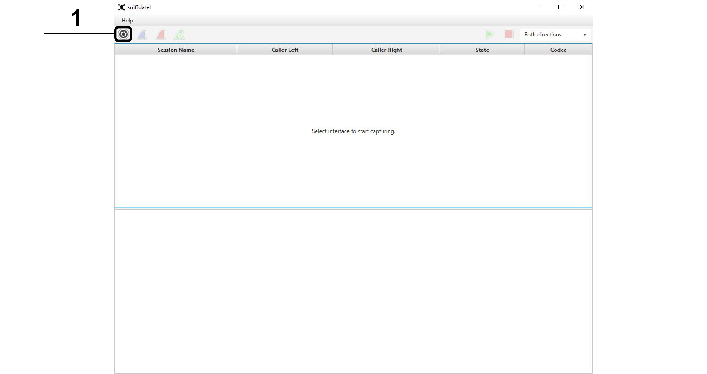
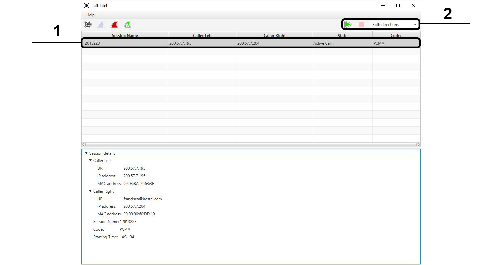
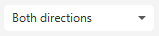

Sniffdatel Help
Sniffdatel is a realtime VoIp sniffing Tool. It allows to eavesdrop VoIP-Sessions.
Requirements
Installation
Linux
You only have to extract "sniffdatel_linux.zip"
$unzip sniffdatel_linux.zip
Windows
You need WinPcap installed.
Extract "sniffdatel_windows.zip"
How to use
The following step-by-step instructions describe how to use Sniffdatel.Start the application:
Windows: Just start the "sniffdatel.exe" file.
Linux: You need root rights to capture network packages.
Switch into the folder "cd sniffdatel/".
To start use "sudo ./sniffdatel.sh".
Find VoIP-Sessions:
The first step is to find VoIP-Sessions. Therefore you have to select your network interface on which you want listen for calls.
1. Click on the "Select network interface" Button. A new Window will open.

2. Select the desired network interface.*
3. Start find VoIP-Sessions with the "Start" Button.

Sniffdatel is now listening for new initialized sessions and will add these to the "Session list".
* Sniffing on wlan devices is only possible if you have a network device with promiscuous mode support.
Start eavesdropping:
After a session is found you have to wait for the state "Active Call..." to start eavesdropping.
1. Select the desired session in the "Session list".
2. Choose the "Audio direction" and press "Start Audio".

For the moment the only supported codecs are PCMU and PMCA.
Components overview:
The Main view is separated in four parts.
1. Session finder button bar
2. Audio button bar
3. Session list
4. Session details

Element Descriptions:

Select network interface

Start session finder
Stop session finder

Restart session finder
Start audio

Stop audio

Audio direction